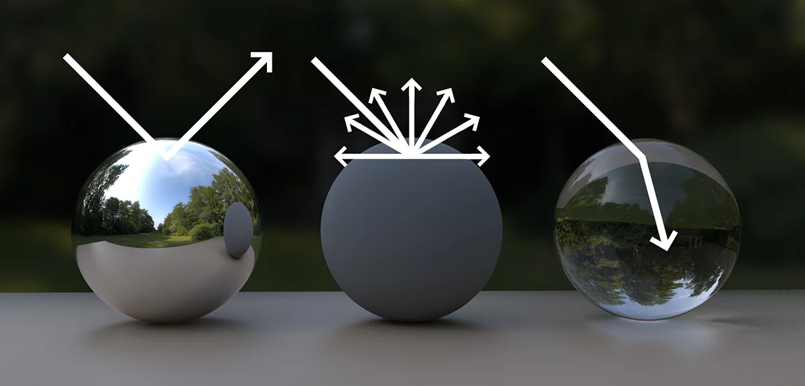
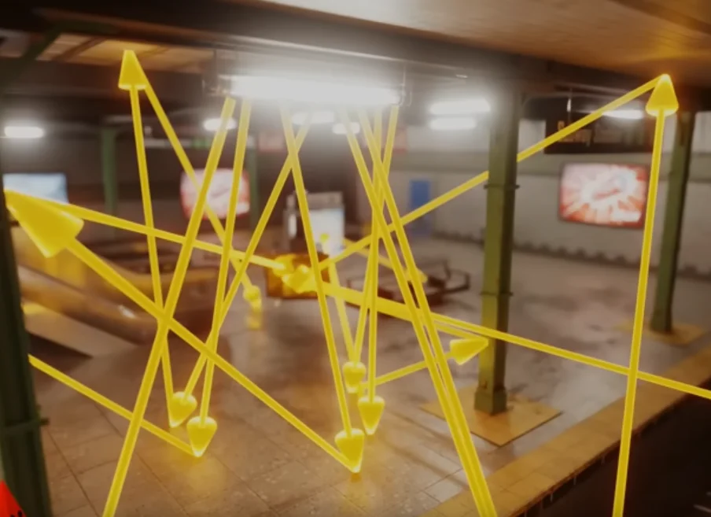
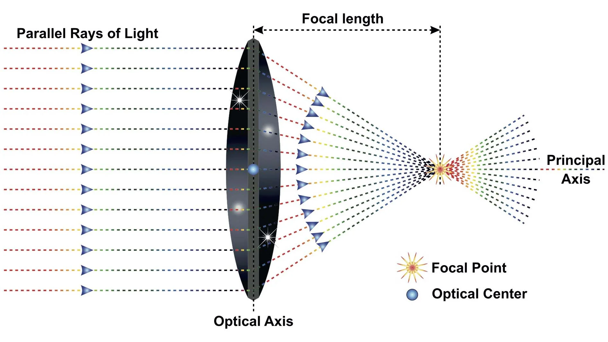

Raytracing in One Weekend, in C++
My adventure following the Ray Tracing in One Weekend series, built from scratch in C++.
First, a big thanks to my teacher Marie for helping me understand raytracing, answering all my questions, and making a more approachable version of the first book. She's the main influence for posts R-1 through R-9.
Understanding Ray Tracing and Light
Our perception of objects depends on light rays emitted from a source, bouncing off surfaces, and reaching our eyes.
The object's color and texture influence how light reflects and refracts, shaping the color we perceive.
A light ray hitting an object can reflect (carrying surface color information), refract through transparent surfaces, or both.
Each ray bounces off objects, including other reflected rays, creating a complex network of light paths.
While this technique is the closest to how real light works, it is really inefficient
with multiple light sources amplifying this complexity, many rays never reach the camera, wasting computational resources.

Improving Efficiency
Instead of simulating rays from the light source, which rarely hit the camera, we reverse the process and shoot rays from the camera outward.
Rays that hit light sources are guaranteed to contribute to the visible image. The ray's color changes are then resolved backward from the light to the camera.
Key Definitions
Viewport : The visible frame of the world from the camera's perspective.
Resolution : The pixel count used to construct the viewport image, also known as ratio.
Focal Point : The point where light rays converge, controlling Depth of Field.

Rays that don't hit objects either return background color (if directly from the camera) or accumulated information from prior bounces.
Now to actually implement it, in the next one. :3c